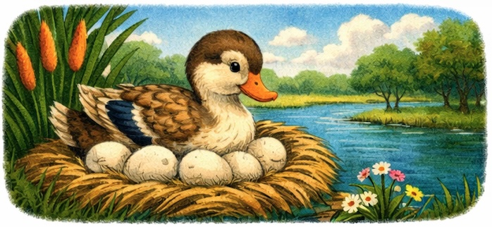
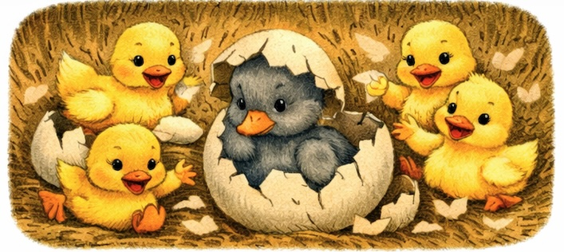
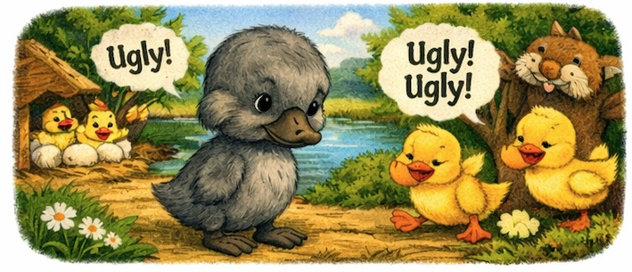
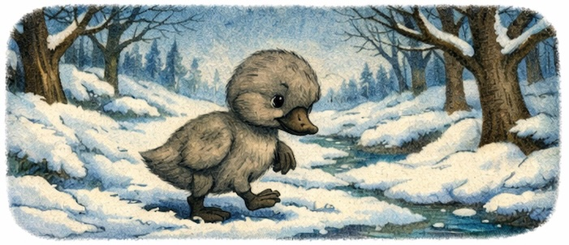
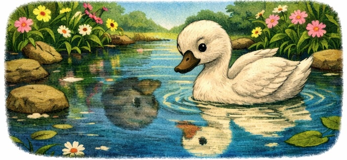
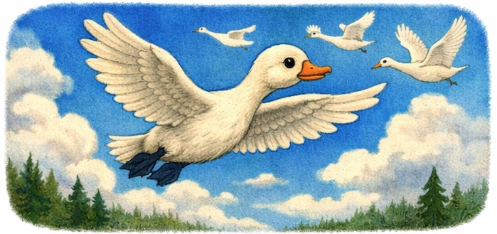

The Ugly Duckling
Once upon a time, near a quiet pond, a mother duck sat on her nest.
She waited and waited for her eggs to hatch.

Crack! One egg opened — out came a fluffy yellow duckling.
Crack! Another yellow duckling.
Crack! Crack! Crack! More little yellow ducklings!
But one big egg was still there.
It cracked slowly.
Out came a duckling — but he looked different.

He was grey, big, and clumsy.
The other ducklings stared.
“What is that?” said one.
“He looks strange!” said another.
Even the animals by the pond were not kind.
“Ugly! Ugly!” they quacked.

The little duckling felt sad.
“Nobody likes me,” he whispered. “I don’t belong here.”
One cold night, he ran away.
He walked through the dark forest and past the frozen river.

He was cold, hungry, and alone.
Winter came. It was hard.
But the little duckling did not give up.
He kept going, one step at a time.
Then one morning, the sun came out.
The ice melted. Flowers bloomed.
Spring was here!
The duckling walked to a beautiful lake.
He looked down at the water — and saw his reflection.
He blinked. He looked again.
He was not a duck at all!
He was a beautiful white swan with a long neck and big wings.

Three swans swam over to him.
“Come and swim with us!” they called.
The young swan smiled.
For the first time, he felt he belonged.
He spread his wings and flew high into the bright blue sky.
He had always been beautiful — he just needed time to grow.

🌟 Moral of the Story:
You are special just the way you are.
Never let anyone’s words make you feel small.
Your time to shine will come.